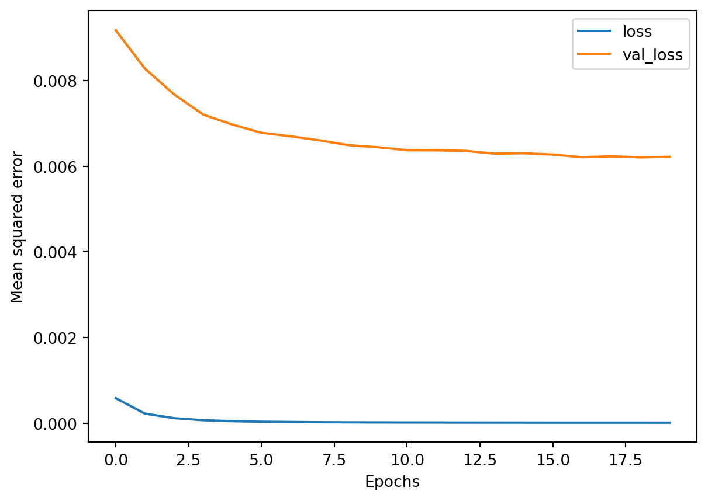

This notebook showcases how to set up neural networks to nowcast inflation using data measured in different frequencies. The goal here is to start with a very simple dataset containing only two variables, inflation (monthly) and oil prices (daily), to slowly build up a more complex neural network based nowcasting model, the TFT-MF available in gingado from its v0.3.0.
Nowcasting is essentially the use of the most current information possible to estimate in real time an economic series of interest such as inflation or GDP before it is actually released1. For example, if you could measure all prices every day, you could create on the last day of the month a very accurate nowcast for the headline inflation for that month - which would only be officialy published a few days later. In the case of GDP, this lag between the end of the reference period and actual publication tends to be significant, around 6-10 weeks. For policymakers, investors and other decisionmakers, a lot can happen in this period.
A related use of nowcasting is to estimate what the current period’s reading will be as this period rolls out. In other words, estimating today what the inflation reading for this month (or GDP for this quarter) will likely be as new information is unveiled in real time.
The nowcasting model available in gingado from v0.3.0 onwards is an adjusted version of the Temporal Fusion Transformer (TFT) of Lim et al. (2021). This architecture combines flexibility to take on multiple datasets while learning which information to focus on and interpretability to provide insights on the important variables in each case.
Roadmap
The TFT model can be a bit complex to understand at first, so we will build it up, step by step. After loading the data in Section 2, the most basic neural network - a neuron layer - is presented in Section 3. This is followed by an architecture that is more suitable for time series in Section 5. Next, these elements are combined in Section 6 to show how the model knows what to focus on. The next individual element is the self-attention layer in Section 7. Finally, if you want to see the full picture directly, go to Section 8 to see how these elements are put together. Section 9 then trains the model and presents the results for this simple, illustrative nowcasting.
Loading the data
Let’s use our SDMX connectors to find and download data from official sources in a reproducible way.
To abstract from currency issues, we will use US inflation and oil prices, which are denominated in US dollars.
Code
import osos.environ["KERAS_BACKEND"] ="tensorflow"import kerasimport matplotlib.pyplot as pltimport numpy as npimport pandas as pdimport sdmxfrom gingado.utils import load_SDMX_datafrom sklearn.feature_selection import VarianceThresholdfrom sklearn.model_selection import TimeSeriesSplitfrom sklearn.preprocessing import PolynomialFeaturesfrom tqdm import tqdm
Inflation
Since this is a monthly nowcast of inflation, the best way to do this is to use a monthly change in the consumer price index, \(\pi_t^{(m)}=(\text{CPI}_t - \text{CPI}_{t-1})/\text{CPI}_{t-1}\), not the year-on-year rate, \(\pi_t^{(y)}=(\text{CPI}_t - \text{CPI}_{t-12})/\text{CPI}_{t-12}\), which is how people usually think of inflation. This is because we want to nowcast only the value at the margin; 11 twelths of \(\pi_t^{(y)}\) are already known, since \(\pi_t^{(y)} = -1 + \prod_{l=0}^{11} (1+\pi_{t-l})\).
Then, only at the end we combine rolling windows of 12 consecutive monthly inflation rates, of which only the last one or two are estimated, to correctly create an annual inflation rate.
Formally, if we know all values except the current and last month’s, then: \[
\hat{\pi}_t^{(y)}=(\prod_{l=0}^1 (1+\hat{\pi}_{t-l}^{(m)}) \prod_{l=2}^{11} (1+\pi_{t-l}^{(m)}) )-1,
\tag{1}\]
where the hat notation (\(\hat{ }\)) means that a particular value was estimated.
For inflation, we take a dataflow from the BIS, since we are looking for US data. Let’s explore it first and then choose the correct data specifications to download the time series.2
Code
BIS = sdmx.Client("BIS")cpi_msg = BIS.dataflow('WS_LONG_CPI')cpi_dsd = cpi_msg.structure
CL_FREQ
A Annual
B Daily - business week (not supported)
D Daily
E Event (not supported)
H Half-yearly
M Monthly
Q Quarterly
W Weekly
Name: Code list for Frequency (FREQ), dtype: object
CL_AREA
1X ECB
4T Emerging market economies (aggregate)
5A All reporting economies
5R Advanced economies
AE United Arab Emirates
...
VN Vietnam
XM Euro area
XW World
ZA South Africa
_Z Not applicable
Name: Reference area code list, Length: 101, dtype: object
We can check that the US is amongst the reference areas:
::: {#cell-check US in REF_AREA codelist .cell execution_count=6}
Code
cl__REF_AREA['US']
'United States'
:::
Finally, the “UNIT_MEASURE” values can be:
::: {#cell-codelist for UNIT_MEASURE in dataflow BIS__WS_LONG_CPI .cell execution_count=7}
In the BIS website for this data, we can see that the unit in levels is Index, 2010 = 100 (the other one is Year-on-year changes, in per cent, which as discussed above we don’t want for this case.)
::: {#cell-finding code for index .cell execution_count=8}
Armed with this knowledge, we can now download monthly consumer price index data for the US. Let’s start after 1985 so that we have a sufficiently long history but without too much influence of the tectonic shift of the US dollar devaluation in the early 1970s and ensuing high inflation:
Temporal features (not implemented for the time being)
There is a lot of information encoded in the temporal features of a time series: which day in the month it is, which month of the year, etc. For example, consider how consumers behave differently in response to oil prices over warmer months (when many decide or not to travel, and how far) compared to colder months (when energy prices factor in heating and is thus perhaps less elastic).
To simplify notation about time, instead of the usual subscript \(t\) as above to denote a time period, for precision about the frequency, we will follow this convention:
subscript \(m\) denotes a given month;
subscript \(d\) denotes a given day;
subscript \(d(m)\) denotes a given day in a given month; example: \(d(m-1)\) is a day in the previous month.
gingado offers a practical way to set up the temporal features that requires only the dates of the dataset.
Code
# NOTE: to add documentation and tests, and later incorporate as a new function in gingado.utils# TO-DO: return also vocab_sizes dictionary, required to set up embedding layer.def get_timefeat(df, freq="d", features=None, add_to_df=False):# For the future documentation: the add_to_df argument should be True if the data will be fed to an algorithm that takes in all data at once. If, like neural networks, the inputs are fed through different "pipelines", then use False and then take the result from this function an feed it separately to a neural network.# the frequency is used to filter which features to add. For example, if monthly then no higher frequency features (day of ..., week of... ) are added because it doesn't make sense# None or list. if futures is None, then add all temporal features that the frequency above allows. Otherwise adds only the names ones all_freqs = ["q", "m", "w", "d"]ifnot pd.api.types.is_datetime64_any_dtype(df.index): df.index = pd.to_datetime(df.index)def i2s(index, df=df):# mini-helper func that transforms an index into a pandas Series with the indexreturn pd.Series(index, index=df.index) dict_timefeat = {}if freq in all_freqs: dict_timefeat['year_end'] = i2s(df.index.to_series().apply(lambda x: 1if x.is_year_end else0)) dict_timefeat['quarter_of_year'] = i2s(df.index.quarter) dict_timefeat['quarter_end'] = i2s(df.index.to_series().apply(lambda x: 1if x.is_quarter_end else0))if freq in [f for f in all_freqs if f notin ["y", "q"]]: dict_timefeat['month_of_quarter'] = i2s(df.index.to_series().apply(lambda x: (x.month -1) %3+1)) dict_timefeat['month_of_year'] = i2s(df.index.month)if freq in [f for f in all_freqs if f notin ["y", "q", "m"]]: dict_timefeat['week_of_month'] = i2s(df.index.to_series().apply(lambda x: (x.day -1) //7+1)) dict_timefeat['week_of_quarter'] = i2s(df.index.to_series().apply(lambda x: ((x - pd.Timestamp(f'{x.year}-{(x.month -1) //3*3+1}-01')).days //7) +1)) dict_timefeat['week_of_year'] = i2s(df.index.isocalendar().week)if freq =="d": dict_timefeat['day_of_week'] = i2s(df.index.dayofweek) dict_timefeat['day_of_month'] = i2s(df.index.day) dict_timefeat['day_of_quarter'] = i2s(df.index.to_series().apply(lambda x: (x - pd.Timestamp(f'{x.year}-01-01')).days %91+1)) dict_timefeat['day_of_year'] = i2s(df.index.dayofyear)# Convert the dictionary of columns to a DataFrame df_timefeat = pd.concat(dict_timefeat, axis=1) var_thresh = VarianceThreshold(threshold=0) df_timefeat = var_thresh.fit_transform(df_timefeat) df_timefeat = pd.DataFrame(df_timefeat, columns=var_thresh.get_feature_names_out(), index=df.index).astype(int)if features: df_timefeat[features] vocab_sizes = {col: df_timefeat[col].nunique() +1for col in df_timefeat}if add_to_df:return pd.concat([df, df_timefeat], axis=1)else:return df_timefeat
Specifically, temporal features are an excellent (and rare) type of known future input. Those are the data that we know will be like that during forecasting time, ie, at the time the observation \(y_t\) takes place. For example, it is trivial to know the day of the week, of the month etc, for any date we are forecasting in.
For this reason, we now calculate the temporal features of inflation.
Code
df_timefeat = get_timefeat(df_infl_m, freq="m")
Splitting the dataset
We will now split the dataset into training data up until end-2020 and validation data afterwards. The training data will be further split into 5 temporally sequential folds.3
To simplify, we will consider valid nowcasting input data for a given output in period \(m\) as:
all monthly data up to, and including, \(m-1\); and
Now for every month \(m\) in the dependent variable, we can find all \(m_{t-l}, l\geq 1\) and all \(d(m_{t-s}), s\geq 0\).
Note that in the example below, for each data point that we want to forecast (y), we take 12 lags of the monthly covariates and 250 lags of the daily covariates.
Code
maxlags = {"m": 12, "d": 250}def create_data(X, y, maxlags=maxlags, tscv=TimeSeriesSplit(n_splits=5), timedim=True):# If timeedim is true, then the dimensions of the tensors are n_samples/time dimension/features. If not then it is n_samples/time dimension (lag) * features, ie each lag is flattened as if it were a feature. Use True when passing to recurrent nets, use False for fully connected layers. X_split = {} y_split = {} n_feat = {k: v.shape[1] for k, v in X.items()}if tscv: split_cv = tscv.split(y) cv_dates = [ (y.index[m], y.index[n]) # (train, valid) for each foldfor m, n in split_cv ]for n_fold, split inenumerate(cv_dates): fold =f"fold_{n_fold}" dates_split = {"train": split[0],"valid": split[1] } X_split[fold] = {"train": [], "valid": []} y_split[fold] = {"train": [], "valid": []}for chunk, dates in dates_split.items():for ysample_date in tqdm(dates): padded_x = {}for f in X.keys():try: to_pad = X[f][:ysample_date][:-1].valuesexceptKeyError: to_pad = np.zeros((1,1)) padded_x[f] = keras.utils.pad_sequences([to_pad], maxlen=maxlags[f], dtype=np.float32) x_shape = (1, maxlags[f], n_feat[f]) if timedim else (1, maxlags[f] * n_feat[f]) padded_x[f] = padded_x[f].reshape(x_shape) X_split[fold][chunk].append(padded_x) y_split[fold][chunk].append(y_train.loc[ysample_date])return X_split, y_splitX_train_split, y_train_split = create_data(X=X_train, y=y_train, maxlags=maxlags)
Let’s see how this time series fold will be structured. Each fold is a sequentially longer window, so we get the following data points:
Code
for fold in y_train_split.keys():print(f"{fold}:")print(f" {len(y_train_split[fold]['train'])} training X-y pairs")print(f" {len(y_train_split[fold]['valid'])} validation X-y pairs")
fold_0:
75 training X-y pairs
71 validation X-y pairs
fold_1:
146 training X-y pairs
71 validation X-y pairs
fold_2:
217 training X-y pairs
71 validation X-y pairs
fold_3:
288 training X-y pairs
71 validation X-y pairs
fold_4:
359 training X-y pairs
71 validation X-y pairs
First model: a fully connected neural network
The goal of this model is to nowcast \(\pi_t\) based on its past values \(\pi_{t-1}\) and on current oil prices \(o_{d(m-s)}, s \geq 0\). The first model we will train is a very simple neural network:
where \(x_t\) is the input data and the subscript of parameters relates to the “depth” of the layer they belong to. Using \(\lambda\) as the dimensionality of the model, \(\mathbf{W}_2 \in \mathbb{R}^{1 \times \lambda}\), \(b_2 \in \mathbb{R}\), \(\mathbf{W}_1 \in \mathbb{R}^{\lambda \times |x_t|}\), \(b_1 \in \mathbb{R}^{d}\), \(\xi \in \mathbb{R}^\lambda\) and \(\phi\) is an activation function. For simplicity, we will use the ReLU activation function, which is simply: \(\phi(z) = \text{max}(z, 0)\).
For this neural network, we need a fix dimensionality of the input data. In other words, the network needs to know how much data it will take in at any given time, and this should not change throughout training or inference time.
For each data in our dependent variable, we simply stack the latest available monthly and daily data and their respective lags. Using the numbers above, this would be 12 lags for monthly data and 250 lags of daily oil data. Linking this to Equation 2 above, \(x_t = [\pi_{m-1}, \dots, \pi_{m-12}, o_d, \dots, o_{d-250}]\).
All of this data will be considered by the neural network at the same time. In a way, this is analogous to how a normal regression is run. However, the number of data points (12 + 250) used in this toy neural network is bigger than typical regressions.
Code
def createNN_fc(dim=16, activation="relu"): nn_fc = keras.Sequential([ keras.layers.Input(shape=(sum([v for v in maxlags.values()]),)), keras.layers.Dense(units=dim, activation=activation, name="SummariseInput"), keras.layers.Dense(units=1, name="CalculateOutput") ], "FullyConnected") nn_fc.compile(loss=keras.losses.MeanSquaredError())return nn_fcnn_fc = createNN_fc()nn_fc.summary()
Figure 5: Architecture of the model with fully connected layer
Note in Figure 5 that a first dense layer (ie, as in Equation 2) takes in 262 data points, uses the activation function ReLU, and then outputs 16 data points for the next layer.4
Checking that it works. In the code below, we take the last fold as an example.
Code
X_train_split_fc, y_train_split_fc = create_data(X=X_train, y=y_train, timedim=False)fold ="fold_4"X_train_fc = np.array([np.concatenate([np.squeeze(v) for v in sample.values()]) for sample in X_train_split_fc[fold]["train"]])y_train_fc = np.array(y_train_split_fc[fold]["train"])X_valid_fc = np.array([np.concatenate([np.squeeze(v) for v in sample.values()]) for sample in X_train_split_fc[fold]["valid"]])y_valid_fc = np.array(y_train_split_fc[fold]["valid"])
You can see in Figure 6 that the loss decreases with training, but the validation loss (ie, calculated on held-out data) is higher than the in-sample loss. This suggests the model is learning too much how to fit the data. In other words, it is also fitting some level of noise, which is not reproducible out-of-sample.
Figure 6: Losses calculated in a simple, fully-connected neural network.

We don’t need to bother training too much this very simple neural network; the goal here is to use it as a building block for a mathematical/econometric intuition of the broader nowcasting model.
A useful tool: a gate
The network trained in the previous section can learn how to map the input data to the output data. But there are ways to take advantage of the incredible flexibility in architecture (ie, how neural layers are stacked). One such way is to have the data inform which layers’s outputs are actually used downstream or not. This section describes how.
First, we replicate the same simple fully connected layer of Equation 2 two times. One of the neural networks will behave as before: learning to map the input data to the output data. The second one will also look at the same data, but with a different goal: it will learn how much data to let through. Its output is a value between 0 and 1, which is then multiplied to the “original” network. When this part of the neural network yields values closer to 0, the mainstream values are effectively shut down. Conversely, when the values are close to 1, the data proceeds as normal.
The model can now be fit with the same input data: it is then used by two different branches (referred to above in the text as “mainstream” and “gate”).
Figure 8: Losses calculated in a simple, fully-connected neural network with gate.
Second model: Long short-term memory
A marked improvement in how we can model time series data is the use of recurrent neural networks (RNNs). In essence, these are networks that learn to keep a stateful memory, which is updated as the network “visits” each sequential step in time, in turn using both the memory and the new data at that period to predict the output.
In contrast to the fully connected layer in Section 3, which need to look at different lags to pick up any history-dependent information, RNNs look at the observable variables at each period and learn a latent “state” (akin to Kalman filters, for example). The same network then slides up one step in time and uses that information and the previous state to update the state, and so on…
One particular type of RNN that has proven to be very successful in practice is the long short-term memory (LSTM) model, due to Hochreiter (1997). It is actually a combination of four different layers, of which three are actually gates. These layers are built in a specific way. Here’s how:
The basic intuition of the LSTM is that some of the individual component layers essentially learn to look at the current data and the past memory and then decide how much new information to let through. Note that, because their activation is a sigmoid, the output of layers \(f_t\), \(i_t\) and \(o_t\) is a number between 0 and 1. This idea is important to bear in mind because it will be used at a much bigger scale by the whole TFT model - and will be one key feature of its interpretability.
With LSTM networks, it is easier to incorporate mixed-frequency data in a meaningful way. This is done below by passing data of each frequency through their own LSTM layers, and combining their output.
Code
dim =16# arbitrary dimensionfreqs = ["m", "d"] # using here the commonly-used frequency abbreviationsinputs = {f: keras.layers.Input(shape=(None,1), name=f) for f in freqs}LSTMs = []for k, v in inputs.items(): lstm = keras.layers.Masking(mask_value=0.0)(v) lstm = keras.layers.LSTM(units=dim, return_sequences=False, name=f"LSTM__freq_{k}")(lstm) LSTMs.append(lstm)encoded_series = keras.layers.Average(name="encoded_series")(LSTMs)out = keras.layers.Dense(units = dim, activation="relu")(encoded_series)out = keras.layers.Dense(units=1)(out)nn_lstm = keras.Model( inputs=inputs, outputs=out, name="LSTMNetwork")nn_lstm.compile(loss=keras.losses.MeanSquaredError())nn_lstm.summary()
Figure 9: Architecture of the network with LSTM layer
The reason why the dimensions in the input layer are now (None, None, 1), with one addition None compared to before(for example, Figure 5) is due to the time dimension. Whereas before the model didn’t know how many samples it would be fed, now also the length of the time window can change because each time step will pass through exactly the same parameters.
Note that the input goes through a few steps before reaching the LSTM layer. This is due to a masking layer that effectively helps the model jumps time steps for which there is no data available.
To check that the LSTM-based neural network works, we need to feed this neural network a slightly different type of data. LSTM, as other recurrent neural networks, takes in time series data. So, unlike before, we now prepare a time series (or panel data) for each
This neural network will then take in the inputed time series data, and encode each frequency’s series separately through the different LSTM streams. The final result will no longer have a time dimension; it is then averaged, and this average embeddings of the different time series is used to forecast the variable of interest.
Code
X_train_split, y_train_split = create_data(X=X_train, y=y_train, maxlags=maxlags)def adjust_data_lstm(fold="fold_0", chunk="train"): X_lstm = {}for d in X_train_split[fold][chunk]:for key, array in d.items():if key notin X_lstm: X_lstm[key] = [] # Initialize an empty list if key is not present X_lstm[key].append(array) # Append the array to the list for that key lstm_X = {k: np.squeeze(np.array(v), axis=1) for k, v in X_lstm.items()}return lstm_Xlstm_X_train = adjust_data_lstm(fold="fold_4", chunk="train")lstm_X_valid = adjust_data_lstm(fold="fold_4", chunk="valid")history_lstm = nn_lstm.fit(x=lstm_X_train, y=np.array(y_train_split["fold_4"]["train"]), validation_data=(lstm_X_valid, np.array(y_train_split["fold_4"]["valid"])), epochs=20, batch_size=10, shuffle=True)
Bok, Brandyn, Daniele Caratelli, Domenico Giannone, Argia M. Sbordone, and Andrea Tambalotti. 2018. “Macroeconomic Nowcasting and Forecasting with Big Data.” Journal Article. Annual Review of Economics 10 (Volume 10, 2018): 615–43. https://doi.org/https://doi.org/10.1146/annurev-economics-080217-053214.
Giannone, Domenico, Lucrezia Reichlin, and David Small. 2008. “Nowcasting: The Real-Time Informational Content of Macroeconomic Data.”Journal of Monetary Economics 55 (4): 665–76.
Hochreiter, S. 1997. “Long Short-Term Memory.”Neural Computation MIT-Press.
Lim, Bryan, Sercan Ö Arık, Nicolas Loeff, and Tomas Pfister. 2021. “Temporal Fusion Transformers for Interpretable Multi-Horizon Time Series Forecasting.”International Journal of Forecasting 37 (4): 1748–64.
Footnotes
Giannone, Reichlin, and Small (2008) pioneered nowcasting in macroeconomics. See Bok et al. (2018) for a review.↩︎
See here for a practical walkthrough showing how to explore data with SDMX.↩︎
See here for more information on time series splitting.↩︎
Ignore the None in the shapes; this means it dependets on each case. Specifically, the first dimension of the shapes in keras are always the number of samples going in the model. Because this varies with every training, application, etc, it is not fixed as the other dimensions are. Another way of thinking about this is as follows: in a regression, you know exactly how many variables you need to have, but the number of data points can vary.↩︎
Source Code
---title: Nowcasting inflation with neural networksdescription: A simple, mixed-frequency exampleoutput-file: nowcast.htmlauthors: - Douglas K. G. Araujo - Johannes Dampcode-fold: showcode-tools: truejupyter: python3warning: falsefig-cap-location: top---This notebook showcases how to set up neural networks to nowcast inflation using data measured in different frequencies. The goal here is to start with a very simple dataset containing only two variables, inflation (monthly) and oil prices (daily), to slowly build up a more complex neural network based nowcasting model, the TFT-MF available in `gingado` from its v0.3.0.Nowcasting is essentially the use of the most current information possible to estimate in real time an economic series of interest such as inflation or GDP before it is actually released[^review]. For example, if you could measure all prices every day, you could create on the last day of the month a very accurate nowcast for the headline inflation for that month - which would only be officialy published a few days later. In the case of GDP, this lag between the end of the reference period and actual publication tends to be significant, around 6-10 weeks. For policymakers, investors and other decisionmakers, a lot can happen in this period.[^review]: @giannone2008nowcasting pioneered nowcasting in macroeconomics. See @bok2018nowcasting for a review.A related use of nowcasting is to estimate what the current period's reading will be as this period rolls out. In other words, estimating today what the inflation reading for this month (or GDP for this quarter) will likely be as new information is unveiled in real time.The nowcasting model available in `gingado` from v0.3.0 onwards is an adjusted version of the Temporal Fusion Transformer (TFT) of @lim2021temporal. This architecture combines *flexibility* to take on multiple datasets while learning which information to focus on and *interpretability* to provide insights on the important variables in each case.## RoadmapThe TFT model can be a bit complex to understand at first, so we will build it up, step by step. After loading the data in @sec-data, the most basic neural network - a neuron layer - is presented in @sec-fc. This is followed by an architecture that is more suitable for time series in @sec-lstm. Next, these elements are combined in @sec-gates to show how the model knows what to focus on. The next individual element is the self-attention layer in @sec-transf. Finally, if you want to see the full picture directly, go to @sec-tftmf to see how these elements are put together. @sec-nowcast then trains the model and presents the results for this simple, illustrative nowcasting.## Loading the data {#sec-data}Let's use our SDMX connectors to find and download data from official sources in a reproducible way.To abstract from currency issues, we will use US inflation and oil prices, which are denominated in US dollars.```{python}#| label: load packagesimport osos.environ["KERAS_BACKEND"] ="tensorflow"import kerasimport matplotlib.pyplot as pltimport numpy as npimport pandas as pdimport sdmxfrom gingado.utils import load_SDMX_datafrom sklearn.feature_selection import VarianceThresholdfrom sklearn.model_selection import TimeSeriesSplitfrom sklearn.preprocessing import PolynomialFeaturesfrom tqdm import tqdm```### InflationSince this is a monthly nowcast of inflation, the best way to do this is to use a *monthly change in the consumer price index*, $\pi_t^{(m)}=(\text{CPI}_t - \text{CPI}_{t-1})/\text{CPI}_{t-1}$, not the year-on-year rate, $\pi_t^{(y)}=(\text{CPI}_t - \text{CPI}_{t-12})/\text{CPI}_{t-12}$, which is how people usually think of inflation. This is because we want to nowcast only the value at the margin; 11 twelths of $\pi_t^{(y)}$ are already known, since $\pi_t^{(y)} = -1 + \prod_{l=0}^{11} (1+\pi_{t-l})$. Then, only at the end we combine rolling windows of 12 consecutive monthly inflation rates, of which only the last one or two are estimated, to correctly create an annual inflation rate. Formally, if we know all values except the current and last month's, then: $$\hat{\pi}_t^{(y)}=(\prod_{l=0}^1 (1+\hat{\pi}_{t-l}^{(m)}) \prod_{l=2}^{11} (1+\pi_{t-l}^{(m)}) )-1,$$ {#eq-finalnowcast}where the hat notation ($\hat{ }$) means that a particular value was estimated.For inflation, we take a dataflow from the [BIS](https://data.bis.org/topics/CPI), since we are looking for US data. Let's explore it first and then choose the correct data specifications to download the time series.[^sdmx][^sdmx]: See [here](https://sdmx1.readthedocs.io/en/latest/walkthrough.html) for a practical walkthrough showing how to explore data with SDMX.```{python}#| label: "inflation dataflow"BIS = sdmx.Client("BIS")cpi_msg = BIS.dataflow('WS_LONG_CPI')cpi_dsd = cpi_msg.structure```These are all possible keys:```{python}#| label: "CPI_dimensions"cpi_dsd['BIS_LONG_CPI'].dimensions.components```For example, "FREQ" (frequency) takes in these values:```{python}#| label: "FREQ_codelist"cl__FREQ = sdmx.to_pandas(cpi_dsd['BIS_LONG_CPI'].dimensions.get("FREQ").local_representation.enumerated)cl__FREQ```And "REF_AREA" (reference area) can be set to:```{python}#| label: "REF_AREA_codelist"cl__REF_AREA = sdmx.to_pandas(cpi_dsd['BIS_LONG_CPI'].dimensions.get("REF_AREA").local_representation.enumerated)cl__REF_AREA```We can check that the US is amongst the reference areas:```{python}#| label: "check US in REF_AREA codelist"cl__REF_AREA['US']```Finally, the "UNIT_MEASURE" values can be:```{python}#| label: "codelist for UNIT_MEASURE in dataflow BIS__WS_LONG_CPI"cl__UNIT_MEASURE = sdmx.to_pandas(cpi_dsd['BIS_LONG_CPI'].dimensions.get("UNIT_MEASURE").local_representation.enumerated)cl__UNIT_MEASURE```In the [BIS website for this data](https://data.bis.org/topics/CPI#faq), we can see that the unit in levels is `Index, 2010 = 100` (the other one is `Year-on-year changes, in per cent`, which as discussed above we don't want for this case.)```{python}#| label: "finding code for index"cl__UNIT_MEASURE[cl__UNIT_MEASURE.str.contains("Index, 2010 = 100")]```Armed with this knowledge, we can now download monthly consumer price index data for the US. Let's start after 1985 so that we have a sufficiently long history but without too much influence of the tectonic shift of the US dollar devaluation in the early 1970s and ensuing high inflation:```{python}#| label: fig-cpi#| fig-cap: "US consumer price index, 2010 = 100"df_infl = load_SDMX_data( sources={"BIS": "'WS_LONG_CPI'"}, keys={"FREQ": "M", "REF_AREA": "US", "UNIT_MEASURE": "628"}, params={"startPeriod": 1985})df_infl.plot()```As you can see in @fig-cpi, we downloaded the series $\{\text{CPI}_t\}$. Transforming that into $\{\pi_t\}$, defined above, we have:```{python}#| label: fig-pi#| fig-cap: US monthly inflation ratefig, ax = plt.subplots()plt.axhline(y=0, linewidth=1.5, color="black")df_infl_m = df_infl.pct_change().dropna()df_infl_m.index = df_infl_m.index + pd.offsets.MonthEnd(0) # move to month enddf_infl_m.plot(ax=ax)plt.show()```### Oil pricesSince the focus is on US inflation, below we get WTI oil prices. This data is downloaded from the [St Louis Fed's FRED webpage](https://fred.stlouisfed.org/series/DCOILWTICO).```{python}#| label: fig-oil#| fig-cap: WTI oil pricesdf_oil = pd.read_csv("docs/DCOILWTICO.csv")df_oil['DCOILWTICO'] = pd.to_numeric(df_oil['DCOILWTICO'], errors='coerce')df_oil['DATE'] = pd.to_datetime(df_oil['DATE'])df_oil.set_index('DATE', inplace=True)df_oil.plot()```For the nowcasting, we are interested in the daily variation, clipped because of the sharp movements during the onset of the Covid-19 pandemic:```{python}#| label: fig-oilD#| fig-cap: Daily change in WTI oil pricesfig, ax = plt.subplots()plt.axhline(y=0, linewidth=1.5, color="black")df_oil_d = df_oil.pct_change().dropna()df_oil_d.plot(ax=ax)plt.ylim(-0.25, 0.25)plt.show()```### Temporal features (not implemented for the time being)There is a lot of information encoded in the temporal features of a time series: which day in the month it is, which month of the year, etc. For example, consider how consumers behave differently in response to oil prices over warmer months (when many decide or not to travel, and how far) compared to colder months (when energy prices factor in heating and is thus perhaps less elastic).To simplify notation about time, instead of the usual subscript $t$ as above to denote a time period, for precision about the frequency, we will follow this convention:- subscript $m$ denotes a given month;- subscript $d$ denotes a given day;- subscript $d(m)$ denotes a given day in a given month; example: $d(m-1)$ is a day in the previous month.`gingado` offers a practical way to set up the temporal features that requires only the dates of the dataset.```{python}#| label: tempfeatures# NOTE: to add documentation and tests, and later incorporate as a new function in gingado.utils# TO-DO: return also vocab_sizes dictionary, required to set up embedding layer.def get_timefeat(df, freq="d", features=None, add_to_df=False):# For the future documentation: the add_to_df argument should be True if the data will be fed to an algorithm that takes in all data at once. If, like neural networks, the inputs are fed through different "pipelines", then use False and then take the result from this function an feed it separately to a neural network.# the frequency is used to filter which features to add. For example, if monthly then no higher frequency features (day of ..., week of... ) are added because it doesn't make sense# None or list. if futures is None, then add all temporal features that the frequency above allows. Otherwise adds only the names ones all_freqs = ["q", "m", "w", "d"]ifnot pd.api.types.is_datetime64_any_dtype(df.index): df.index = pd.to_datetime(df.index)def i2s(index, df=df):# mini-helper func that transforms an index into a pandas Series with the indexreturn pd.Series(index, index=df.index) dict_timefeat = {}if freq in all_freqs: dict_timefeat['year_end'] = i2s(df.index.to_series().apply(lambda x: 1if x.is_year_end else0)) dict_timefeat['quarter_of_year'] = i2s(df.index.quarter) dict_timefeat['quarter_end'] = i2s(df.index.to_series().apply(lambda x: 1if x.is_quarter_end else0))if freq in [f for f in all_freqs if f notin ["y", "q"]]: dict_timefeat['month_of_quarter'] = i2s(df.index.to_series().apply(lambda x: (x.month -1) %3+1)) dict_timefeat['month_of_year'] = i2s(df.index.month)if freq in [f for f in all_freqs if f notin ["y", "q", "m"]]: dict_timefeat['week_of_month'] = i2s(df.index.to_series().apply(lambda x: (x.day -1) //7+1)) dict_timefeat['week_of_quarter'] = i2s(df.index.to_series().apply(lambda x: ((x - pd.Timestamp(f'{x.year}-{(x.month -1) //3*3+1}-01')).days //7) +1)) dict_timefeat['week_of_year'] = i2s(df.index.isocalendar().week)if freq =="d": dict_timefeat['day_of_week'] = i2s(df.index.dayofweek) dict_timefeat['day_of_month'] = i2s(df.index.day) dict_timefeat['day_of_quarter'] = i2s(df.index.to_series().apply(lambda x: (x - pd.Timestamp(f'{x.year}-01-01')).days %91+1)) dict_timefeat['day_of_year'] = i2s(df.index.dayofyear)# Convert the dictionary of columns to a DataFrame df_timefeat = pd.concat(dict_timefeat, axis=1) var_thresh = VarianceThreshold(threshold=0) df_timefeat = var_thresh.fit_transform(df_timefeat) df_timefeat = pd.DataFrame(df_timefeat, columns=var_thresh.get_feature_names_out(), index=df.index).astype(int)if features: df_timefeat[features] vocab_sizes = {col: df_timefeat[col].nunique() +1for col in df_timefeat}if add_to_df:return pd.concat([df, df_timefeat], axis=1)else:return df_timefeat```Specifically, temporal features are an excellent (and rare) type of *known future* input. Those are the data that we know will be like that during forecasting time, ie, at the time the observation $y_t$ takes place. For example, it is trivial to know the day of the week, of the month etc, for any date we are forecasting in.For this reason, we now calculate the temporal features of inflation.```{python}#| label: temporal features for the inflation seriesdf_timefeat = get_timefeat(df_infl_m, freq="m")```### Splitting the datasetWe will now split the dataset into training data up until end-2020 and validation data afterwards. The training data will be further split into 5 temporally sequential folds.[^tssplit][^tssplit]: See [here](https://scikit-learn.org/stable/modules/cross_validation.html#time-series-split) for more information on time series splitting.To simplify, we will consider valid nowcasting *input* data for a given output in period $m$ as:- all monthly data up to, and including, $m-1$; and- all daily data up to, and including, $d(m)$.```{python}#| label: "time series splits"# Training date cutoffcutoff ="2020-12-31"y_train, y_test = df_infl_m[:cutoff][1:], df_infl_m[cutoff:][1:]Xm_train, Xm_test = df_infl_m[:cutoff][:-1], df_infl_m[cutoff:][:-1]Xd_train, Xd_test = df_oil_d[:cutoff], df_oil_d[cutoff:]X_train = {"m": Xm_train, "d": Xd_train}X_test = {"m": Xm_test, "d": Xd_test}```Now for every month $m$ in the dependent variable, we can find all $m_{t-l}, l\geq 1$ and all $d(m_{t-s}), s\geq 0$.Note that in the example below, for each data point that we want to forecast (`y`), we take 12 lags of the monthly covariates and 250 lags of the daily covariates.```{python}#| label: create datamaxlags = {"m": 12, "d": 250}def create_data(X, y, maxlags=maxlags, tscv=TimeSeriesSplit(n_splits=5), timedim=True):# If timeedim is true, then the dimensions of the tensors are n_samples/time dimension/features. If not then it is n_samples/time dimension (lag) * features, ie each lag is flattened as if it were a feature. Use True when passing to recurrent nets, use False for fully connected layers. X_split = {} y_split = {} n_feat = {k: v.shape[1] for k, v in X.items()}if tscv: split_cv = tscv.split(y) cv_dates = [ (y.index[m], y.index[n]) # (train, valid) for each foldfor m, n in split_cv ]for n_fold, split inenumerate(cv_dates): fold =f"fold_{n_fold}" dates_split = {"train": split[0],"valid": split[1] } X_split[fold] = {"train": [], "valid": []} y_split[fold] = {"train": [], "valid": []}for chunk, dates in dates_split.items():for ysample_date in tqdm(dates): padded_x = {}for f in X.keys():try: to_pad = X[f][:ysample_date][:-1].valuesexceptKeyError: to_pad = np.zeros((1,1)) padded_x[f] = keras.utils.pad_sequences([to_pad], maxlen=maxlags[f], dtype=np.float32) x_shape = (1, maxlags[f], n_feat[f]) if timedim else (1, maxlags[f] * n_feat[f]) padded_x[f] = padded_x[f].reshape(x_shape) X_split[fold][chunk].append(padded_x) y_split[fold][chunk].append(y_train.loc[ysample_date])return X_split, y_splitX_train_split, y_train_split = create_data(X=X_train, y=y_train, maxlags=maxlags)```Let's see how this time series fold will be structured. Each fold is a sequentially longer window, so we get the following data points:```{python}#| label: "Create batches of data"for fold in y_train_split.keys():print(f"{fold}:")print(f" {len(y_train_split[fold]['train'])} training X-y pairs")print(f" {len(y_train_split[fold]['valid'])} validation X-y pairs")```## First model: a fully connected neural network {#sec-fc}The goal of this model is to nowcast $\pi_t$ based on its past values $\pi_{t-1}$ and on current oil prices $o_{d(m-s)}, s \geq 0$. The first model we will train is a very simple neural network:$$\begin{align}\xi &= \phi(\mathbf{W}_1 x_t + \mathbf{b}_1) \\y_t &= \mathbf{W}_2 \xi + \mathbf{b}_2,\end{align}$$ {#eq-model0nnlayer}where $x_t$ is the input data and the subscript of parameters relates to the "depth" of the layer they belong to. Using $\lambda$ as the dimensionality of the model, $\mathbf{W}_2 \in \mathbb{R}^{1 \times \lambda}$, $b_2 \in \mathbb{R}$, $\mathbf{W}_1 \in \mathbb{R}^{\lambda \times |x_t|}$, $b_1 \in \mathbb{R}^{d}$, $\xi \in \mathbb{R}^\lambda$ and $\phi$ is an activation function. For simplicity, we will use the ReLU activation function, which is simply: $\phi(z) = \text{max}(z, 0)$.For this neural network, we need a fix dimensionality of the input data. In other words, the network *needs* to know how much data it will take in at any given time, and this should not change throughout training or inference time.For each data in our dependent variable, we simply stack the latest available monthly and daily data and their respective lags. Using the numbers above, this would be 12 lags for monthly data and 250 lags of daily oil data. Linking this to @eq-model0nnlayer above, $x_t = [\pi_{m-1}, \dots, \pi_{m-12}, o_d, \dots, o_{d-250}]$. All of this data will be considered by the neural network at the same time. In a way, this is analogous to how a normal regression is run. However, the number of data points (12 + 250) used in this toy neural network is bigger than typical regressions.```{python}#| label: tbl-nn_fc_summary#| tbl-cap: Summary of fully connected modeldef createNN_fc(dim=16, activation="relu"): nn_fc = keras.Sequential([ keras.layers.Input(shape=(sum([v for v in maxlags.values()]),)), keras.layers.Dense(units=dim, activation=activation, name="SummariseInput"), keras.layers.Dense(units=1, name="CalculateOutput") ], "FullyConnected") nn_fc.compile(loss=keras.losses.MeanSquaredError())return nn_fcnn_fc = createNN_fc()nn_fc.summary()```@fig-archfc presents the architecture of this model.```{python}#| label: fig-archfc#| fig-cap: Architecture of the model with fully connected layerkeras.utils.plot_model(nn_fc, show_shapes=True, show_layer_names=True, show_layer_activations=True)```Note in @fig-archfc that a first dense layer (ie, as in @eq-model0nnlayer) takes in 262 data points, uses the activation function ReLU, and then outputs 16 data points for the next layer.[^NoneDim][^NoneDim]: Ignore the `None` in the shapes; this means it dependets on each case. Specifically, the first dimension of the shapes in keras are always the number of samples going in the model. Because this varies with every training, application, etc, it is not fixed as the other dimensions are. Another way of thinking about this is as follows: in a regression, you know exactly how many variables you need to have, but the number of data points can vary.Checking that it works. In the code below, we take the last fold as an example. ```{python}#| label: preparing fully connected NN dataX_train_split_fc, y_train_split_fc = create_data(X=X_train, y=y_train, timedim=False)fold ="fold_4"X_train_fc = np.array([np.concatenate([np.squeeze(v) for v in sample.values()]) for sample in X_train_split_fc[fold]["train"]])y_train_fc = np.array(y_train_split_fc[fold]["train"])X_valid_fc = np.array([np.concatenate([np.squeeze(v) for v in sample.values()]) for sample in X_train_split_fc[fold]["valid"]])y_valid_fc = np.array(y_train_split_fc[fold]["valid"])```Now we train the network.```{python}#| label: check nn model workshistory_fc = nn_fc.fit(x=X_train_fc, y=y_train_fc, validation_data=(X_valid_fc, y_valid_fc), epochs=20, batch_size=10, shuffle=True)```You can see in @fig-history_fc that the loss decreases with training, but the validation loss (ie, calculated on held-out data) is higher than the in-sample loss. This suggests the model is learning *too much* how to fit the data. In other words, it is also fitting some level of noise, which is not reproducible out-of-sample.```{python}#| label: fig-history_fc#| fig-cap: Losses calculated in a simple, fully-connected neural network.ax = pd.DataFrame(history_fc.history).plot()ax.set_xlabel("Epochs")ax.set_ylabel("Mean squared error")plt.show()```We don't need to bother training too much this very simple neural network; the goal here is to use it as a building block for a mathematical/econometric intuition of the broader nowcasting model.## A useful tool: a gate {#sec-gate}The network trained in the previous section can learn how to map the input data to the output data. But there are ways to take advantage of the incredible flexibility in architecture (ie, how neural layers are stacked). One such way is to have the data inform which layers's outputs are actually used downstream or not. This section describes how.First, we replicate the same simple fully connected layer of @eq-model0nnlayer two times. One of the neural networks will behave as before: learning to map the input data to the output data. The second one will also look at the same data, but with a different goal: it will learn how much data to let through. Its output is a value between 0 and 1, which is then multiplied to the "original" network. When this part of the neural network yields values closer to 0, the mainstream values are effectively shut down. Conversely, when the values are close to 1, the data proceeds as normal.Adjusting @eq-model0nnlayer to include a gate could be as in @eq-gated:$$\begin{align}\xi &= \phi(\mathbf{W}_1 x_t + \mathbf{b}_1) \\G &= \sigma(\mathbf{W}_G x_t + \mathbf{b}_G) \\y_t &= \mathbf{W}_2 (\xi \odot G) + \mathbf{b}_2,\end{align}$$ {#eq-gated}with $\sigma$ representing the sigmoid function and $\odot$ the Hadamard multiplication.Note that the data that informs the gate does not necessarily need to be the same as the mainstream data.```{python}#| label: tbl-nn_fc_gated_summary#| tbl-cap: Summary of gated modelmainstream = createNN_fc(activation="relu")gate = createNN_fc(activation="sigmoid")dim =16input= keras.layers.Input(shape=(sum([v for v in maxlags.values()]),), name="FlattenedLaggedData")mainstream = keras.layers.Dense(units=dim, activation="relu", name="SummariseInput")(input)gate = keras.layers.Dense(units=dim, activation="sigmoid", name="Gate")(input)gated_data = keras.layers.Multiply(name="GatedData")([mainstream, gate])output = keras.layers.Dense(units=1, name="CalculateOutput")(gated_data)nn_fc_gated = keras.Model(inputs=input, outputs=output, name="GatedModel")nn_fc_gated.compile(loss=keras.losses.MeanSquaredError())nn_fc_gated.summary()``````{python}#| label: fig-arch_gatedmodel#| fig-cap: Architecture of gated neural networkkeras.utils.plot_model(nn_fc_gated, show_layer_names=True, show_layer_activations=True, show_shapes=True)```The model can now be fit with the same input data: it is then used by two different branches (referred to above in the text as "mainstream" and "gate").```{python}#| label: fitting gated modelhistory_fc_gated = nn_fc_gated.fit(x=X_train_fc, y=y_train_fc, validation_data=(X_valid_fc, y_valid_fc), epochs=20, batch_size=10, shuffle=True)``````{python}#| label: fig-history_fc_gated#| fig-cap: Losses calculated in a simple, fully-connected neural network with gate.gated_loss = pd.DataFrame(history_fc_gated.history)gated_loss["val_loss (no gate)"] = history_fc.history["val_loss"]ax = gated_loss.plot()ax.set_xlabel("Epochs")ax.set_ylabel("Mean squared error")plt.show()```## Second model: Long short-term memory {#sec-lstm}A marked improvement in how we can model time series data is the use of recurrent neural networks (RNNs). In essence, these are networks that learn to keep a stateful memory, which is updated as the network "visits" each sequential step in time, in turn using both the memory and the new data at that period to predict the output.In contrast to the fully connected layer in @sec-fc, which need to look at different lags to pick up any history-dependent information, RNNs look at the observable variables at each period and learn a latent "state" (akin to Kalman filters, for example). The same network then slides up one step in time and uses that information and the previous state to update the state, and so on...One particular type of RNN that has proven to be very successful in practice is the long short-term memory (LSTM) model, due to @hochreiter1997long. It is actually a combination of four different layers, of which three are actually gates. These layers are built in a specific way. Here's how:$$\begin{align}f_t &= \sigma(W_f x_t + U_f h_{t-1} + b_f) \\i_t &= \sigma(W_i x_t + U_i h_{t-1} + b_i) \\o_t &= \sigma(W_o x_t + U_o h_{t-1} + b_o) \\\tilde{c}_t &= \omega(W_c x_t + U_c h_{t-1} + b_c) \\c_t &= \underbrace{f_t \odot c_{t-1}}_{\text{Gated past data}} + \underbrace{i_t \odot \tilde{c}_t}_{\text{How much to learn}} \\h_t &= o_t \odot \omega(c_t),\end{align}$$ {#eq-model1lstm}where $\omega$ is the hyperbolic function.The basic intuition of the LSTM is that some of the individual component layers essentially learn to look at the current data and the past memory and then decide how much new information to let through. Note that, because their activation is a sigmoid, the output of layers $f_t$, $i_t$ and $o_t$ is a number between 0 and 1. This idea is important to bear in mind because it will be used at a much bigger scale by the whole TFT model - and will be one key feature of its interpretability.With LSTM networks, it is easier to incorporate mixed-frequency data in a meaningful way. This is done below by passing data of each frequency through their own LSTM layers, and combining their output.```{python}#| label: tbl-lstm_summary#| tbl-cap: Summary of LSTM modeldim =16# arbitrary dimensionfreqs = ["m", "d"] # using here the commonly-used frequency abbreviationsinputs = {f: keras.layers.Input(shape=(None,1), name=f) for f in freqs}LSTMs = []for k, v in inputs.items(): lstm = keras.layers.Masking(mask_value=0.0)(v) lstm = keras.layers.LSTM(units=dim, return_sequences=False, name=f"LSTM__freq_{k}")(lstm) LSTMs.append(lstm)encoded_series = keras.layers.Average(name="encoded_series")(LSTMs)out = keras.layers.Dense(units = dim, activation="relu")(encoded_series)out = keras.layers.Dense(units=1)(out)nn_lstm = keras.Model( inputs=inputs, outputs=out, name="LSTMNetwork")nn_lstm.compile(loss=keras.losses.MeanSquaredError())nn_lstm.summary()``````{python}#| label: fig-archlstm#| fig-cap: Architecture of the network with LSTM layerkeras.utils.plot_model(nn_lstm, show_layer_activations=True, show_shapes=True, show_layer_names=True)```The reason why the dimensions in the input layer are now `(None, None, 1)`, with one addition `None` compared to before(for example, @fig-archfc) is due to the *time dimension*. Whereas before the model didn't know how many samples it would be fed, now also the length of the time window can change because each time step will pass through exactly the same parameters. Note that the input goes through a few steps before reaching the LSTM layer. This is due to a masking layer that effectively helps the model jumps time steps for which there is no data available.To check that the LSTM-based neural network works, we need to feed this neural network a slightly different type of data. LSTM, as other recurrent neural networks, takes in time series data. So, unlike before, we now prepare a time series (or panel data) for each This neural network will then take in the inputed time series data, and encode each frequency's series separately through the different LSTM streams. The final result will no longer have a time dimension; it is then averaged, and this average embeddings of the different time series is used to forecast the variable of interest.```{python}#| label: train the lstmX_train_split, y_train_split = create_data(X=X_train, y=y_train, maxlags=maxlags)def adjust_data_lstm(fold="fold_0", chunk="train"): X_lstm = {}for d in X_train_split[fold][chunk]:for key, array in d.items():if key notin X_lstm: X_lstm[key] = [] # Initialize an empty list if key is not present X_lstm[key].append(array) # Append the array to the list for that key lstm_X = {k: np.squeeze(np.array(v), axis=1) for k, v in X_lstm.items()}return lstm_Xlstm_X_train = adjust_data_lstm(fold="fold_4", chunk="train")lstm_X_valid = adjust_data_lstm(fold="fold_4", chunk="valid")history_lstm = nn_lstm.fit(x=lstm_X_train, y=np.array(y_train_split["fold_4"]["train"]), validation_data=(lstm_X_valid, np.array(y_train_split["fold_4"]["valid"])), epochs=20, batch_size=10, shuffle=True)``````{python}#| label: fig-history_lstm#| fig-cap: Losses calculated in an LSTM#| fig-subcap:#| - All models so far#| - LSTM onlylstm_loss = pd.DataFrame(history_lstm.history)lstm_loss["val_loss (FC with gate)"] = history_fc_gated.history["val_loss"]lstm_loss["val_loss (FC no gate)"] = history_fc.history["val_loss"]ax = lstm_loss.plot()ax.set_xlabel("Epochs")ax.set_ylabel("Mean squared error")plt.show()ax = lstm_loss[["loss", "val_loss"]].plot()ax.set_xlabel("Epochs")ax.set_ylabel("Mean squared error")plt.show()```## Introducing... the gatekeepers {#sec-gates}## Now is a(nother) good time to pay attention {#sec-transf}## Complete architecture {#sec-tftmf}## Nowcasting inflation with a simple model {#sec-nowcast}## References::: {#refs}:::